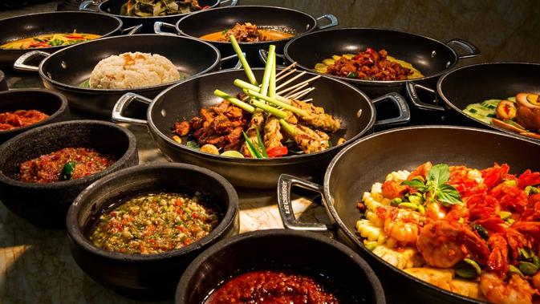

Rekomendasi Makanan Khas Indonesia
Indonesia memiliki banyak makanan khas yang sangat lezat dan nikmat. Cita rasa dari rempah-rempahnya menjadi salah satu kunci kelezatan masakan Nusantara. Sebagai orang Indonesia, kita harus mengenal berbagai masakan khas Nusantara. Berikut ini rekomendasi makanan khas Indonesia. Cek ya, mana saja yang paling kamu suka!
